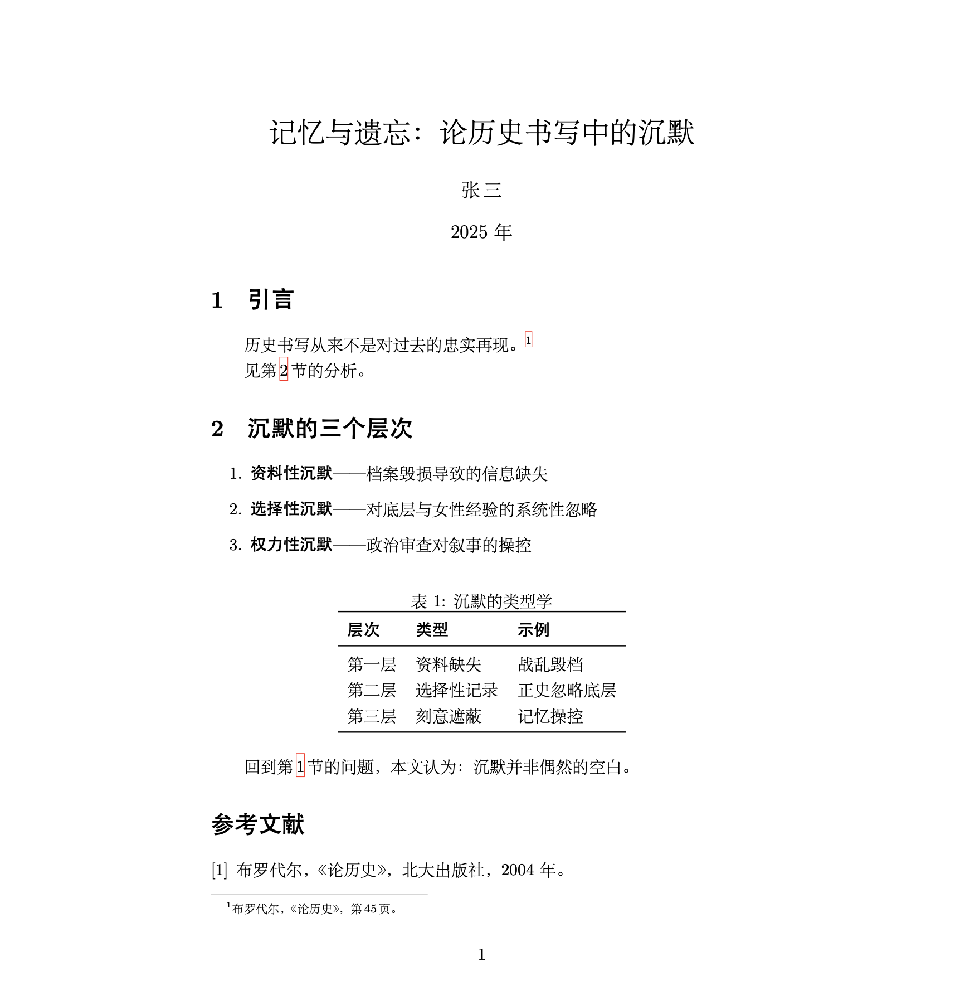

根据我的交往人群，读者诸君肯定有不少从事于人文学科或者广义的人文社科。在这样一个AI时代，一些只用多折腾一点点的信息技术或可以为大家提升不少的效率。我把我的全程经验写下来，也许能有一些帮助。
文章写作：$\LaTeX$
$\LaTeX$是一种排版方式，优势在于对于数学公式的支持，在理科学生学者那里广泛使用，我由于数理逻辑课作业的需求接触到了它。看起来和人文没有什么相干对不对？但是这种通过命令行来排版的语言在AI时代就具有了极高的优势。如果是Word写稿的工具流，我们只能把LLM（大语言模型）生成的文本复制粘贴到Word软件中再手动调整格式设置，更别提频繁出现又难以解决的排版问题。
但是，$\LaTeX$语言的所有格式安排都在源代码中通过文本得到了表达，也就是说，如果配置好了$\LaTeX$编译环境，AI可以全程操盘你的文章内容和排版，并且极易生成出美观学术的排版效果，这是我向人文相关学生推荐此的原因。（不过对有些社科和工科来说，对于多图表的文章写作不如Word方便，可以不用考虑）
此外，另一个主要的好处是，作为最主要的文献管理系统之一的Bibtex是基于$\LaTeX$的，无需另外的软件或配置就可以高效地进行文献管理、插入参考文献、交叉引用等功能，目录、页眉页脚、列表、小标题等格式设置也极其简便。
$\LaTeX$还支持模板，关于毕业论文的模板各高校都可找到，撰写时只用专注于内容文本，不必顾及格式排版问题。
关于$\LaTeX$环境的部署，我不在这里赘述，参看 这篇博文 即可，十分详细。
关于$\LaTeX$语言的学习，可以参看 一份（不太）简短的$\LaTeX$介绍， 比较全面，并且不必追求像学习自然语言那样，只要学会基本的语法，具体操作时遇到问题再随时参阅即可，毕竟主要任务可以交给AI。
以下是一个写作的例子，生成自AI，展示基本的工作方式。%后为代码注释：
\documentclass{article}
\usepackage{ctex} % 中文排版引擎
\usepackage{booktabs} % 三线表宏包
\usepackage{hyperref} % 超链接与交叉引用
\title{记忆与遗忘：论历史书写中的沉默}
\author{张\,三}
\date{2025 年}
\begin{document}
\maketitle
\section{引言}
\label{sec:intro}
历史书写从来不是对过去的忠实再现。%
\footnote{布罗代尔，《论历史》，第\,45\,页。} % 脚注自动编号与排版
见第\,\ref{sec:body}\,节的分析。 % 交叉引用，序号自动更新
\section{沉默的三个层次}
\label{sec:body}
\begin{enumerate}
\item \textbf{资料性沉默}——档案毁损导致的信息缺失
\item \textbf{选择性沉默}——对底层与女性经验的系统性忽略
\item \textbf{权力性沉默}——政治审查对叙事的操控
\end{enumerate}
\begin{table}[htbp]
\centering
\caption{沉默的类型学} % 表题与编号自动生成
\begin{tabular}{lll}
\toprule
\textbf{层次} & \textbf{类型} & \textbf{示例} \\
\midrule
第一层 & 资料缺失 & 战乱毁档 \\
第二层 & 选择性记录 & 正史忽略底层 \\
第三层 & 刻意遮蔽 & 记忆操控 \\
\bottomrule
\end{tabular}
\end{table}
回到第\,\ref{sec:intro}\,节的问题，本文认为：沉默并非偶然的空白。
\begin{thebibliography}{9} % 参考文献环境
\bibitem{b} 布罗代尔，《论历史》，北大出版社，2004 年。
\end{thebibliography}
\end{document}
完成后点击编译，就会得到成品文档：

成品pdf文档的脚注、交叉引用都是可点击跳转的。